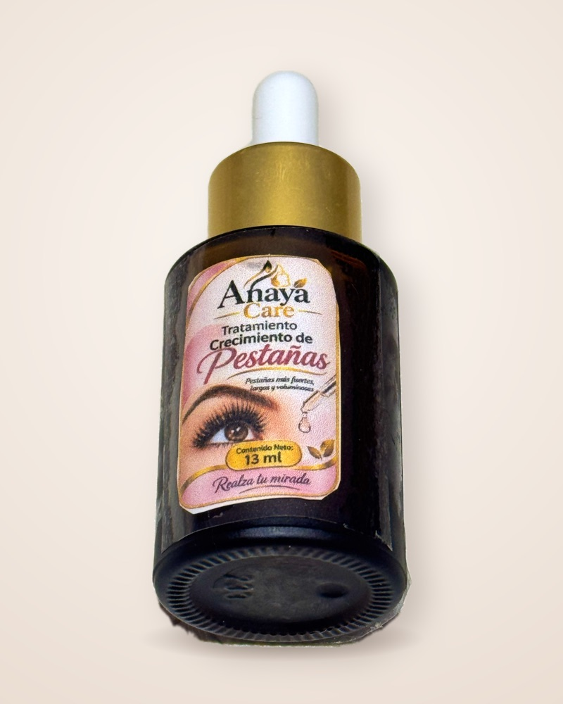
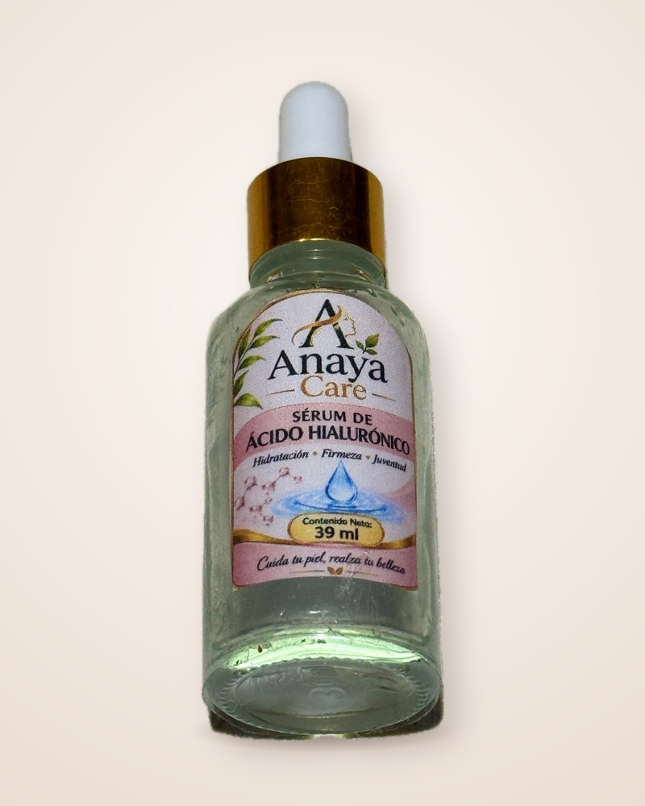
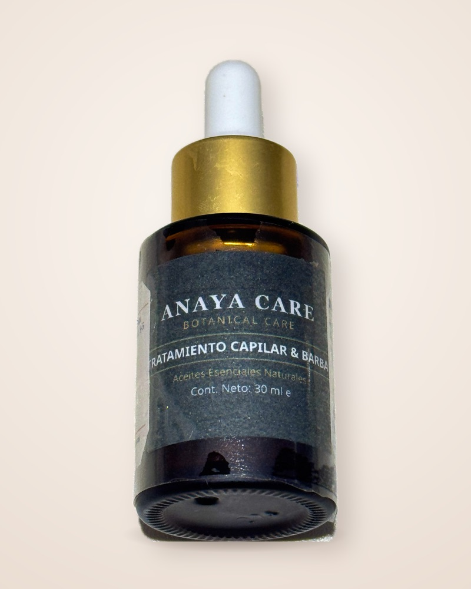

Mirada
Tratamiento Crecimiento de Pestañas
Realza tu mirada
Mezcla de aceites vegetales con vitamina E para nutrir y acondicionar tus pestañas desde la raíz.
Cosmética botánica artesanal · Ecuador
Aceites, sérums y tratamientos elaborados a mano en pequeños lotes, con ingredientes naturales como ricino, argán, jojoba, romero y ácido hialurónico.

Productos destacados
Cada frasco lleva sus ingredientes, modo de uso y precauciones en la etiqueta. Abre los detalles para ver todas las fotos y pide el tuyo en un mensaje.

Mirada
Realza tu mirada
Mezcla de aceites vegetales con vitamina E para nutrir y acondicionar tus pestañas desde la raíz.

Rostro
Hidratación · Firmeza · Juventud
Sérum ligero con ácido hialurónico, glicerina y vitamina E para el cuidado diario del rostro y el cuello.

Cabello
Ricino, aguacate, jojoba y argán
Mezcla de aceites vegetales con extracto de romero para aplicar de medios a puntas antes de usar herramientas de calor.

Cabello y barba
Botanical Care · aceites esenciales naturales
Aceites de almendras dulces y ricino con aceites esenciales de bergamota y romero, pensado para el cuidado del cabello y la barba.
Bajo pedido
Jabones artesanales, cuidado facial, labial y bienestar. Preparamos estos productos en lotes pequeños: consúltanos la disponibilidad por WhatsApp.
Rostro
Manzanilla, caléndula y vitamina E.
Rostro
Agua de hamamelis, aloe vera, glicerina vegetal y betaína de coco.
Rostro
Leche virginal, betaína de coco y vitamina E.
Rostro
Extracto de pepino, ácido hialurónico y vitamina E.
Rostro
Harina de arroz, avena, caolín y óxido de zinc.
Cabello
Romero, ortiga y vitamina E.
Cabello
Extracto de cebolla y vitamina E.
Jabones
Harina de arroz, manteca de karité y aceite de almendras.
Jabones
Carbón activado, aceite de jojoba y árbol de té.
Jabones
Avena, manteca de karité, aceite de coco y vainilla.
Jabones
Café, manteca de karité y aceite de coco.
Labios
Cera de abejas, aceite de almendras y vitamina E.
Bienestar
Cera de soja, manteca de karité, aceite de almendras y lavanda.
Bienestar
Aceite de almendras y aceite esencial de menta.
Bienestar
Gel de textura ligera, sin fragancia.
Nosotros
Anaya Care nace del gusto por la química cosmética y las plantas: formulamos y envasamos cada producto de forma artesanal, cuidando la calidad de los ingredientes y la información de cada etiqueta.
Misión
Elaborar cosméticos artesanales de origen botánico, con ingredientes naturales y procesos cuidadosos, que acompañen el autocuidado diario de nuestros clientes con productos honestos, seguros y accesibles, y una atención cercana y personalizada.
Visión
Ser una marca ecuatoriana referente en cosmética natural artesanal, reconocida por la calidad de sus fórmulas, la transparencia de sus ingredientes y la confianza de una comunidad que elige cuidarse de forma consciente.
Priorizamos aceites vegetales, extractos y activos de origen natural.
Declaramos los ingredientes de cada producto en su etiqueta.
Lotes pequeños, elaborados y envasados a mano con higiene y precisión.
Te asesoramos de forma personal para que elijas lo que tu piel y tu cabello necesitan.
Contacto
Escríbenos por WhatsApp: te ayudamos a elegir tu producto, coordinamos la entrega y resolvemos cualquier pregunta sobre su uso.
+593 93 992 9104
Abrir chat de WhatsApp